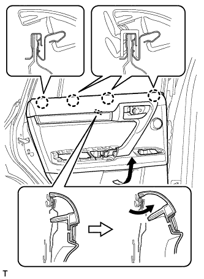

DOOR COURTESY LIGHT (for Rear) > REMOVAL |
| 1. REMOVE REAR DOOR INSIDE HANDLE BEZEL PLUG LH |
 |
Using moulding remover A, detach the 3 claws and remove the rear door inside handle bezel plug as shown in the illustration.
| 2. REMOVE REAR ARMREST ASSEMBLY LH |
 |
Using moulding remover B, detach the 7 claws and 7 guides and remove the rear armrest assembly as shown in the illustration.
| 3. REMOVE REAR POWER WINDOW REGULATOR SWITCH ASSEMBLY |
 |
Using a moulding remover B, detach the 2 clips, 4 claws and guide as shown in the illustration.
Disconnect the connector and remove the rear power window regulator switch assembly with rear door armrest base panel.
| 4. REMOVE REAR DOOR TRIM BOARD SUB-ASSEMBLY LH |
 |
Remove the 2 screws.
Using a clip remover, detach the 9 clips.
|  |
Pull out the rear door trim board sub-assembly in the direction indicated by the arrow in the illustration.
Raise the rear door trim board sub-assembly to detach the 4 claws and remove the rear door trim board sub-assembly together with the rear door inner glass weatherstrip.
 |
Disconnect the rear door lock remote control cable assembly and rear door inside locking cable assembly as shown in the illustration.
Disconnect each connector.
 |
Using a screwdriver, detach the claw and remove the clamp.
| 5. REMOVE REAR DOOR INNER GLASS WEATHERSTRIP LH |
 |
Using a screwdriver, detach the 3 claws and remove the rear door inner glass weatherstrip from the rear door trim board sub-assembly as shown in the illustration.
| 6. REMOVE NO. 2 COURTESY LIGHT ASSEMBLY |
 |
Detach the 2 claws and remove the light.
Disconnect the connector.
| 7. REMOVE COURTESY LIGHT BULB |
Remove the bulb.